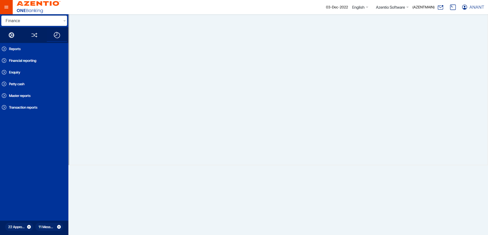
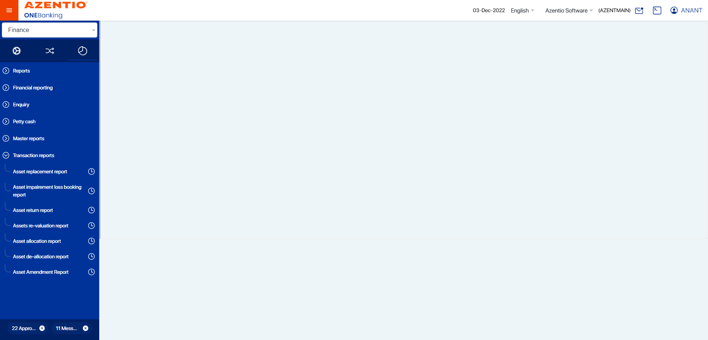
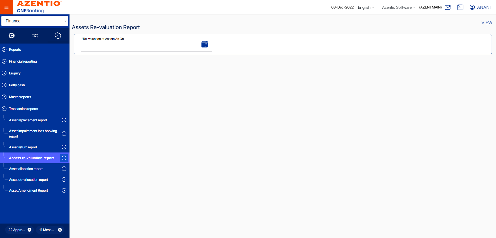
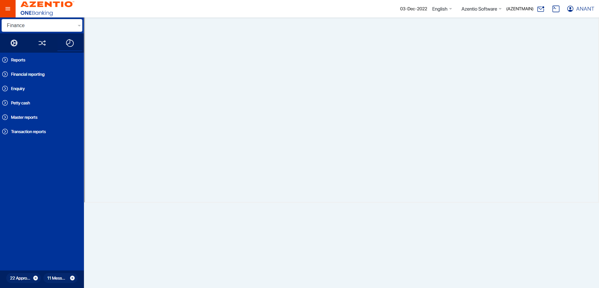
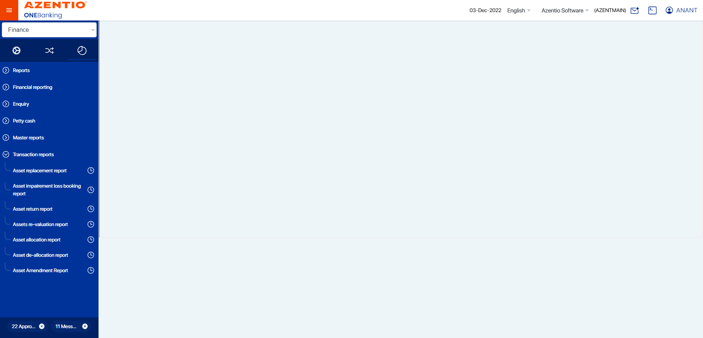
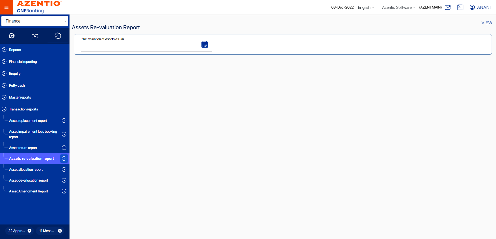

-
To verify the reports for fixed asset
16:27:57 PM / 29:11:154 Fail
To verify the reports for fixed asset
01.31.2023 16:27:57 01.31.2023 17:27:08 29:11:154 · #test-id=1FailCheck Asset return ReportGiven Maker Navigate to UAT URL loginstepdefinitions.HooksClass.addScreenshot(io.cucumber.java.Scenario)screenshot Then Click on Report buttonstepdefinitions.HooksClass.addScreenshot(io.cucumber.java.Scenario)screenshotThen Click on Transaction Reports tabstepdefinitions.HooksClass.addScreenshot(io.cucumber.java.Scenario)screenshotThen Click on return Report edit buttonstepdefinitions.HooksClass.addScreenshot(io.cucumber.java.Scenario)screenshotThen choose the data set for asset return reportstepdefinitions.HooksClass.addScreenshot(io.cucumber.java.Scenario)screenshotThen Fill details for return reportstepdefinitions.HooksClass.addScreenshot(io.cucumber.java.Scenario)And Get the system dataStep skippedThen Select return date in calendarStep skippedThen Click on the View buttonStep skippedThen close the reportStep skippedstepdefinitions.HooksClass.TearDown(io.cucumber.java.Scenario)
Then Click on Report buttonstepdefinitions.HooksClass.addScreenshot(io.cucumber.java.Scenario)screenshotThen Click on Transaction Reports tabstepdefinitions.HooksClass.addScreenshot(io.cucumber.java.Scenario)screenshotThen Click on return Report edit buttonstepdefinitions.HooksClass.addScreenshot(io.cucumber.java.Scenario)screenshotThen choose the data set for asset return reportstepdefinitions.HooksClass.addScreenshot(io.cucumber.java.Scenario)screenshotThen Fill details for return reportstepdefinitions.HooksClass.addScreenshot(io.cucumber.java.Scenario)And Get the system dataStep skippedThen Select return date in calendarStep skippedThen Click on the View buttonStep skippedThen close the reportStep skippedstepdefinitions.HooksClass.TearDown(io.cucumber.java.Scenario)
Started
Jan 31, 2023 04:27:49 PM
Ended
Jan 31, 2023 05:27:08 PM
Features Passed
0
Features Failed
1
Features
Scenarios
Steps
Timeline
Tags
| Name | Passed | Failed | Skipped | Others | Passed % |
|---|---|---|---|---|---|
| @KUBS_FAT_UAT_013_016_Return | 0 | 1 | 0 | 0 | 0% |
System/Environment
| Name | Value |
|---|---|
| version | 10 |
| os | windows |
-
@KUBS_FAT_UAT_013_016_Return
1 tests
@KUBS_FAT_UAT_013_016_Return
1 failedStatus Timestamp TestName Fail 16:27:57 PM Check Asset return Report To verify the reports for fixed asset.Check Asset return Report
-
org.openqa.selenium.remote.UnreachableBrowserException
1 tests
org.openqa.selenium.remote.UnreachableBrowserException
1 failedStatus Timestamp TestName Fail 16:28:53 PM Then Fill details for return report To verify the reports for fixed asset.Check Asset return Report.Then Fill details for return reportFail 17:27:07 PM stepdefinitions.HooksClass.addScreenshot(io.cucumber.java.Scenario) To verify the reports for fixed asset.Check Asset return Report.stepdefinitions.HooksClass.addScreenshot(io.cucumber.java.Scenario)Fail 17:27:07 PM stepdefinitions.HooksClass.TearDown(io.cucumber.java.Scenario) To verify the reports for fixed asset.Check Asset return Report.stepdefinitions.HooksClass.TearDown(io.cucumber.java.Scenario)